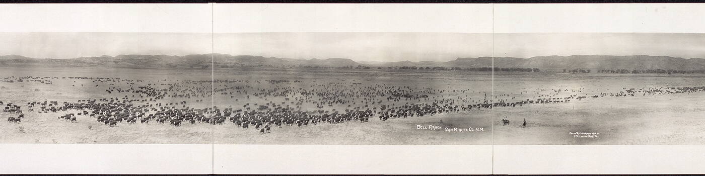

A Rails engine holding every state, county, city and ZIP code of the United States.

gem 'usa', '~> 0.5.0'
bin/rails g usa:install
bin/rails db:migrate
A database made from a schema dump carries the tables and none of the rows.
bin/rails db:usa:seed fills it, and is safe to run again.
| Table | Model | Rows |
|---|---|---|
| states | State | 51 |
| counties | County | 3,144 |
| cities | City | 32,058 |
| city_counties | CityCounty | 33,475 |
| zips | ZIP | 40,977 |